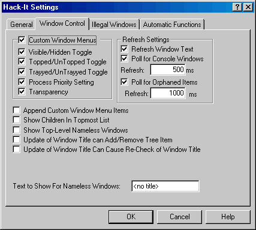

Hack-It v4.0 Help |
| Window Control Tab |
|
 Custom Window Menus:
This option enables the custom System Menu entries that Hack-It can
provide. These entries will appear in the system menu of any desktop
window, and can be chosen from the following options. The default is
On/Checked.
Refresh Window Text:
This option specifies whether Hack-It will keep the text of items in the
windows list updated. Note: Many windows will be initially added to the
list with no title, since at first creation many windows do not report
one. If this option is turned off, they will not update to the actual
title of the window. If you do not have Hack-It set to Show Top-Level
Nameless Windows, the window would never appear in the list. Turning this
feature off reduces the amount of processor time that Hack-It uses
slightly, but can have other adverse effects. The default is On/Checked. Poll for Console
Windows: Console windows (Command Prompts) in some versions of
Windows are not detected when they appear. Turning this option on sets a
timer to poll for these windows and add them to the list. The default is
On/Checked. Console Window
Poll Refresh: This sets the time, in milliseconds, between console
window polls. The default is 500ms. Poll for Orphaned
Items: Under some versions of Windows, when a program unexpectedly
crashes or is forcibly terminated, Hack-It will not be notified of the
window's destruction. Turning on this option will set a timer to remove
these orphaned items from the window list automatically. This also removes
console windows (command prompts) from the list, since Hack-It is
sometimes not notified that they have been closed. Note: This poll only
checks for orphaned top-level windows. Child windows should not need this
feature. The default is On/Checked. Orphaned Item
Poll Refresh: This sets the time, in milliseconds, between
orphaned window polls. The default is 1000ms. Append
Custom Window Menu Items: Hack-It normally adds custom system menu
items at the beginning of the menu. Some applications depend on the order
of items in their system/window menus to always stay the same (VMWare is
such an application). Checking this box causes custom system menu items to
be added at the end of the menu, rather than the beginning. The default is
Off/Unchecked. Show
Topmost Children In Topmost List: When a parent window has a
topmost child, this option will make sure that child is listed in the
Topmost list. Default is Off/Unchecked. Show
Top-Level Nameless Windows: There are many top-level windows –
especially hidden ones - that
do not have titles. This option allows you to specify whether or not they
will be added to the window list. The default is Off/Unchecked. Update
of Window Title can Add/Remove Tree Item: When a window’s title
changes, the new title may qualify it to be shown in the window list, or
similarly disqualify it. Checking this box causes Hack-It to add or remove
windows as appropriate when their titles change. The default is
Off/Unchecked. Update
of Window Title Can Cause Re-Check of Window Title: When a
window’s title changes, the new title may match an autofunction that it
did not match before. Checking this box causes Hack-It to re-run
autofunctions against this window to check for a match when the window’s
title changes. The default is Off/Unchecked. Text to Show
For Nameless Windows: This is the text shown in the list for
windows that do not have a title. It can be anything you like. The default
is “<no title>”. |
|
Copyright 2002, Headius Incorporated |